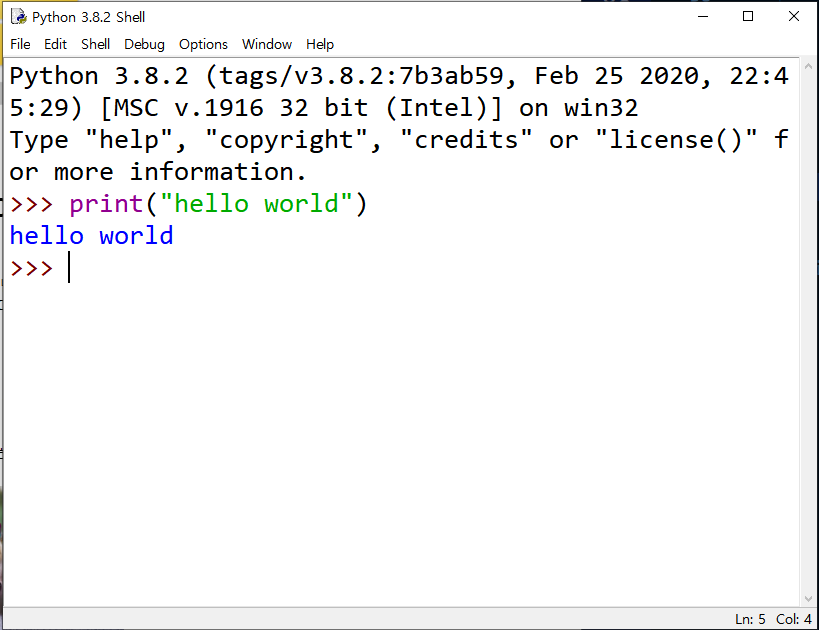

파이썬

파이썬이란?
파이썬은 1991년 프로그래머인 귀도 반 로섬이 발표한 프로그래밍 언어로, 플랫폼에 독립적이며 인터프리터식, 객체지향적, 동적타이핑 대화영 언어이다.
파이썬이라는 이름은 귀도가 좋아하는 코미디 "Monty Python's Flying Circus"에서 따온 것이다.
출처 : 위키백과
이 수업은 함수 까지 나갈겁니다!
그리고 한가지 당부말씀!
코딩은 구글링이 있어야 완전하다고 생각합니다
모르는건 구글링하면 나오니까 구글링을 잘 활용하시면 훌룡한 개발자가 되실꺼예요!
파이썬 설치하기
요거는 구글링하면 다 나옵니다! (귀찮아서 그런거 아니예요. 아무튼 아니예요 크흠)저는 파이썬 공식 홈페이지에 있는걸 쓸겁니다

Hello world!
자 이제는 파이썬을 켜서 Hello world를 쳐 봅시다!딱 개발환경을 세팅하면 Hello world 치는게 국룰이더군요..

요러시면 hello world가 출력되요! 우와!(●'◡'●)
자 요렇게 잘 나오시면 지금까지 잘 하신겁니다!
그럼 본격적으로 시작해 볼까요?
파일 만들기
조금전 shell창에서 file을 누르고 new file을 눌러주세용!그럼 아무것도 없는 창이 하나 열릴 겁니다. 그걸 ctrl+s로 저장해주세요!
요런 창이 뜨시면 아주아주 잘한겁니다 (☞ﾟヮﾟ)☞ 칭찬도장 꾸욱
만약 창을 껐는데 코드를 수정하고 싶다!
그러면 파이썬 파일 우클릭 -> Edit with ide -> Edit with ide
출력
짝짝짝 출력하는 시간이 왔어요~이거 배우면 계속 써야하니까 잘 이해해주세요(*/ω＼*)
파이썬에서 출력을 할땐 print()을 써요
JAVA는 System.out.println();
C는 printf();
혹시.. 뭔가 이상한 걸 찾지 않으셨나요?
바로 파이썬만 ";"가 없죠!
세미콜론(;)이 없으니 파이썬이 개꿀이긴 하죠..
아까 치셨던 Hello world 기억 나시죠?
그게 바로 print()랍니다. print를 쓰고 괄호안에 뭘 쓰면 shell창에 출력을 할수 있답니다~
ctrl+F5 를 누르고 실행하시면 딱 나올겁니다
어때요? 이해가 되시나요?
세뇌
자 지금까지 어떠셨나요? 쉽죠?아 저는 넘 힘들어요 하
요거 html코드로 다 적고 있거든요 ㅠ
변수
한번 허리 쭉 펴시고! 다시 시작해 봅시다변수란 변하는 거라는 뜻을 가지고 있어요
요렇게 말로만 하는 것보다 예를 드는게 더 낮죠?
여기 여러분이 발명한 타임머신이 있다고 예를 들어 봅시다
젤 처음 값을 50만원으로 정했어요
근데 잘 팔려서 100만원으로 다시 정했어요
근데 또 안팔려서 75만원으로 다시 정했어요
이렇게 변할 수 있는 것이 변수예요
그런데?
변수를 어떻게 만들까요?
변수이름 = 넣을 값
요렇게 만듭니다.
자 예를 들어봅시다
a = 50
요거는 무슨 의미일까요?
50을 a에 넣는다 라는 거예요!
주의 하실것이 있어요🎃
절대 이걸 a는 50과 같다로 이해하시면 안돼요
a = 50은 a에 50을 대입하는 겁니다.
그래서 대입연산자라고 불리죠
변수에는 문자열도?
변수에는 숫자만 넣을수 있을까요?아니에요~ 바로 문자열, 실수형, 불린형, 여러가지를 넣을수 있답니다~
문자열(string) - 말그대로 문자
실수형(float) - 소수 ex) 3.1, 3.14, 3.141592
불린형(boolean)- True, False
그럼 한번 볼까요?
아차차차 제가 주석을 설명 안드렸네요!
주석은 메모같은 거예요. 파이썬에서 #을 쓰고 주석을 작성하면
컴파일러(실행시키는거)는 알아서 저거는 안보고 지나간답니다
자 사진을 보시면 50은 int(정수)형이라고 적혀있고..
b는 문자열이예요. 어느 글자든 문자열이 될수 있어요. ("", ''를 앞뒤로 붙여야 문자열인걸 알아채요!)
c는 실수형! 아까 소수라고 말씀 드렸죠~^^
저 코드를 치시고
print(a)
print(b)
print(C)
를 한번 쳐보세요
각각 "a를 출력한다", "b를 출력한다", "c를 출력한다" 이런거랍니다.
산술 연산자
산술 연산자로는"+" - 더하기
"-" - 빼기
"*" - 곱하기
"/" - 나누기
"**"- 제곱
"//"- 몫
"%" - 나머지
요런 것들이 있습니다
설명만 하는 것 보다 예시를 보는게 이해가 더 잘되겠죠?
ex)
a = 10 # a에 10을 넣는다
b = 2 # b에 2를 넣는다
c = 3 # c에 3을 넣는다
plus = a + b # plus에다가 a와 b를 더한 값. 즉 12를 넣는다
minus = a - b # minus에다가 a에서 b를 뺀 값. 8을 넣는다
multiply = a * b # multiply에다가 a와 b를 곱한 값 20을 넣는다
divide = a / b # divide에다가 a를 b로 나눈 값 5를 넣는다
jegop = 10 ** 3 # jegop에다가 10의 세제곱 값을 넣는다
mog = 10 // 2 # mog에다 10 나누기 2의 몫을 넣는다
namuzi = 10 % 3 # namuzi에 10을 3으로 나눈 거의 나머지를 넣는다
제곱이 헷갈리실까봐 따로 설명 드리겠습니다!
10 ** 3 제곱은 10^3, 10 * 10 * 10 요것들과 같습니다.
다음은 요것들을 아주 쉽게 출력하는 방법을 알려드릴게요!
f 문자열 포매팅
그러고 보니까 제가 요건 아직 말씀 안드렸네요..print("문자열 ~~~", 변수)
요렇게 하면 변수를 문자열 젤 뒤에 오게 할수 있답니다
하지만!
문자열 사이사이에 변수가 들어가야 하면 어떡해야 할까요?
print("문자열", 변수, "문자열", 변수, ......)
요렇게 할 수도 있지만! 요렇게 하면 힘들겠죠?
그래서 있는게 f 문자열 포맷팅 입니다
제일 먼저 print()를 써야겠죠?
괄호안에 젤 먼저 f를 써 줍니다.
그리고 작은 따움표로 감싸야 해요
그리고 변수를 중간에 넣을라면 중괄호 사이에 넣어야 합니다
뭔말인지 이해가 잘 안가시죠?
이럴때는 코드를 보여드리겠습니다!
코드

결과

이해가 되시나요?
만약 안되시면!! Home 메뉴에 가면 코뮤니티 사진이 있을 겁니다!
그걸 누르시고 코뮤니티에 가셔서 물어보시면 됩니다^^
복합 대입 연산자?
복합 대입 연산자란대입과 연산을 한꺼번에 할수있는 하이브리드형 연산자!
그럼 복합 대입 연산자에 어떤게 있을까요?
x += y -의미 : x = x + y
x -= y -의미 : x = x - y
x *= y -의미 : x = x * y
x /= y -의미 : x = x / y
x %= y -의미 : x = x % y
그럼 항상 그랬던것 처럼 코드를 씁시다!
코드
실행 결과
혹시 이해가 안되시면 home menu에 있는 코뮤니티에 가서 물어보세요!
input
변수에 코드로 직접 넣는 것 말고 실행시켰을때사용자에게 입력 받는것은 어떻해 할까요?
변수 = input("입력해라 : ")
문자열은 요런식으로 하면돼요
변수 = int(input("입력해라 : "))
정수형은 요렇게!
int()로 감싸준 이유는 int형으로 형변환 하기 위해서에요
input() 괄호 안에 있는 것은 입력 받을때 출력하는 문자열이예요
입력을 받으면 변수에 대입합니다
조건 연산자
조건 연산자는 참(True) 혹은 거짓(False) 을 반환하는 연산자 입니다.조건 연산자도 다른연산자와 같이 여러가지가 있어용
자자 그럼 설명타임!
a = 20
b = 30
c = 20
요렇게 값을 넣어줍시다.
a == c 는 어떤 걸 의미할까요?
바로바로 True입니다!!
a는 20, c는 20, ==는 위에서 같다라는 의미가 있었죠?
이것은 a는 c와 같다 요거 참이잖아요? 그쵸?
그러니 True를 의미하는 겁니다.
이 True가 의미하는 걸 어떻게 알까요?
값을 다른 변수에 넣고
그거 출력하면 됩니다!
ex)
d = (a == c) # 괄호 없어도 돼요. 보기 좋으라고 한거예요!
print(d)
----실행 결과----
True
리스트, 튜플, 딕셔너리
배열들이 왔어요~ 다들 허리한번 쭉 피시고! 기지개 한번 펴시고!기운내시고 시작해 봅시다
리스트, 튜플, 딕셔너리란?
여러 값들을 모아놓은 배열입니다!
리스트
리스트는 진짜진짜 중요합니다
이 배열들에는 여러가지 값이 들어갈 수 있어요.
Boolean, int, float, string..... 이런 게 들어갈수 있어요!
배열 중 리스트는 어떻게 생겼을까요?
리스트는 중괄호([])로 감싸져 있어요.
그럼 어떻게 만들까요?
이름 = ["~", 1, 1.1, True]
요렇게 생겼어요
만들었으면 써야겠죠?
print(이름[인덱스 번호]) 이렇게 하면 인덱스 번호번째에 있는 값이 출력된답니다
근데 인덱스 번호가 무엇이냐
몇번째 있는지 말하는건데 사람이 하는것과는 살짝 달라요
우리가 숫자를 셀때 보통 하나, 둘, 셋, ....
이렇게 1부터 세잖아요?
하지만 컴퓨터는 달라요
컴퓨터는 0부터 세요
그럼 또 예시!
ex)
일단 리스트를 하나만듭시다
list1 = [1, 2, 3, 4, 5]
그럼 이제 불러볼까요?
0부터 센다고 말했으니까 list1[0]은 무엇일까요?
머리가 생각하는 것보다 컴퓨터에게 한번 시켜보죠
print(list1[0])
----실행 결과----
1
와 1이 나왔어요!
이로써 우리는 인덱스 번호가 무엇인지 알았어요
그럼 제가 하나 과제를 드릴게용!
맨 위에 코딩은 구글링이 있어야 완전하다고 생각한다고 적혀있죠?
구글에 "인덱스 슬라이싱"을 검색해보세요!
저는 무작정 만들면서 모르는건 구글링해서 하니까 실력이 올라가더군요
여러분도 구글을 잘 활용해보세요!
이 배열들에는 여러가지 값이 들어갈 수 있어요.
Boolean, int, float, string..... 이런 게 들어갈수 있어요!
배열 중 리스트는 어떻게 생겼을까요?
리스트는 중괄호([])로 감싸져 있어요.
그럼 어떻게 만들까요?
이름 = ["~", 1, 1.1, True]
요렇게 생겼어요
만들었으면 써야겠죠?
print(이름[인덱스 번호]) 이렇게 하면 인덱스 번호번째에 있는 값이 출력된답니다
근데 인덱스 번호가 무엇이냐
몇번째 있는지 말하는건데 사람이 하는것과는 살짝 달라요
우리가 숫자를 셀때 보통 하나, 둘, 셋, ....
이렇게 1부터 세잖아요?
하지만 컴퓨터는 달라요
컴퓨터는 0부터 세요
그럼 또 예시!
ex)
일단 리스트를 하나만듭시다
list1 = [1, 2, 3, 4, 5]
그럼 이제 불러볼까요?
0부터 센다고 말했으니까 list1[0]은 무엇일까요?
머리가 생각하는 것보다 컴퓨터에게 한번 시켜보죠
print(list1[0])
----실행 결과----
1
와 1이 나왔어요!
이로써 우리는 인덱스 번호가 무엇인지 알았어요
그럼 제가 하나 과제를 드릴게용!
맨 위에 코딩은 구글링이 있어야 완전하다고 생각한다고 적혀있죠?
구글에 "인덱스 슬라이싱"을 검색해보세요!
저는 무작정 만들면서 모르는건 구글링해서 하니까 실력이 올라가더군요
여러분도 구글을 잘 활용해보세요!
튜플
튜플은 리스트와 거의 유사합니다!
다만 다른점은
만드는 방법과
리스트는 값을 바꿀수 있지만
튜플은 값을 바꿀수 없어요
튜플은 리스트와 다르게 대괄호를 생략해도 된답니다.
저는 보통 중괄호 대신 소괄호를 써요
그리고 튜플도 인덱스 번호를 쓴답니다!
다만 다른점은
만드는 방법과
리스트는 값을 바꿀수 있지만
튜플은 값을 바꿀수 없어요
튜플은 리스트와 다르게 대괄호를 생략해도 된답니다.
저는 보통 중괄호 대신 소괄호를 써요
그리고 튜플도 인덱스 번호를 쓴답니다!
딕셔너리
사람은 "이름"="아잉", "나이"=14 이렇게 구별할 수 있죠?
컴퓨터도 이렇게 대응관계를 나타내는 배열이 있는데
이걸 파이썬에서 딕셔너리(Dictionary)라고 합니다
딕셔너리는 key와 value를 한쌍으로 가져요
예를 들어, key가 "혈액형"이면 value는 "B"가 돼요
그럼 딕셔너리를 만드는 법을 알아볼까요?
변수 = {key:value, key:value,....}
이런식으로 만들어 진답니다.
그럼 또 예시를 만들어 볼까요?
코드

눈치 채셨나요?(❁´◡`❁)
딕셔너리이름[key] 이렇게 쓰면
key값의 value를 불러올 수 있답니다!
이제 끝이 보입니다!
조금만 더 힘을 내 주세요!
컴퓨터도 이렇게 대응관계를 나타내는 배열이 있는데
이걸 파이썬에서 딕셔너리(Dictionary)라고 합니다
딕셔너리는 key와 value를 한쌍으로 가져요
예를 들어, key가 "혈액형"이면 value는 "B"가 돼요
그럼 딕셔너리를 만드는 법을 알아볼까요?
변수 = {key:value, key:value,....}
이런식으로 만들어 진답니다.
그럼 또 예시를 만들어 볼까요?
코드
눈치 채셨나요?(❁´◡`❁)
딕셔너리이름[key] 이렇게 쓰면
key값의 value를 불러올 수 있답니다!
이제 끝이 보입니다!
조금만 더 힘을 내 주세요!
조건문
조건문 파트에 도달했어요! 지금까지 열심히 들어온 자신에게사랑한다고 말하세요!
조건문은 if문이 있어요
조건문은 코드를 보면서 설명을 할께요
if 조건식:
실행할 코드
요것이 바로 if문 입니다
조건식에서 참인경우에 코드를 실행하는 겁니다
실행할 코드 앞에 4칸 들여쓰기 꼭!
ex)
a = 20
if a == 20:
print("a는 20입니다.")
----실행 결과----
a는 20입니다.
if ~ else문
if문에서 참인경우에만 코드를 실행했다면거짓일때 실행할 코드도 넣을 수 있겠죠?
이럴때! else를 사용하면 됩니다
if 조건식:
실행할 코드 # 조건식이 True 일때 실행할 코드
else:
실행할 코드 # 조건식이 False일때 실행할 코드
if ~ elif ~ else
조건식이 False일때 실행하는 것도 만들었다면조건식이 False고 또 다른 조건일때 실행하는 코드도 만들 수 있을까요?
네! 만들 수 있습니다
if 조건식:
실행할 코드
elif 조건식:
실행할 코드
else :
실행할 코드
조건식 보너스
파이썬 예제중에 if문에서 조건식을 둘다 만족해야 실행하는게 예제가 있더군요!그래서 그건 어떻게 하는지 알려드리겠습니다.
조건식에
if 조건식1 && 조건식2:
실행할 코드
이러면 조건식 두개가 모두 True여야 코드를 실행할수 있습니다
어? 그러면 둘 중 하나라도 True라면 실행할 순 없나요?
아니요~ 가능합니다
이럴땐 && 대신 ||을 쓰면 돼요
&& 요게 and라는 의미를 가지고 있다면
|| 요거는 or라는 의미를 가지고 있어요
키보드에 요게 어딨냐면
엔터키 위에 보면 원화 그려진거 있는데 그거를 shift 누르고 치시면 돼요!
while문
while문은 반복문 입니다!while(조건식):
실행할 코드
요렇게 조건식이 True면 코드를 반복합니다.
그런데! 코드가 계속 참이면 코드가 무한 반복되겠죠?
그러니 코드를 실행하면서 조건식이 거짓이 되었을때 빠져나가게 해야합니다!
ex)
i = 0
while i < 5:
print(i)
i += 1
어떤 순서로 실행되는지 알려드릴께요
먼저 조건식을 젤 먼저 보고, 참일 경우 코드를 실행합니다.
코드가 다 실행되면 다시 조건식으로 가서 참인지 거짓인지 확인하고
참일 경우 또 다시 코드를 실행합니다
조건식이 거짓일 경우 반복문을 빠져나옵니다
위 코드의 실행결과
0
1
2
3
4
저는 이 코드를 빠져나오기 위해 실행될때 마다 1씩 더해지게 만들었어요
휴 while문 끝! 이제 for문하고 함수 남았습니다!
for
자 이제 제가 가장 좋아하는! for문 입니다!근데 for문 설명을 어떻게 해야할지 고민이되서
링크를 남겨드립니다!
이분이 제가 본것 중에 탑!
링크
함수
드디어 마지막 파트 함수입니다!마지막이니 힘을 조금만 더 내주세요!
제가 이것저것 적어보았는데 제것보다 다른분의 설명이 더 확실하더군요!!
그래서 배울 건 똑바른 정보를 가지고 배워야 하니 이것도 링크를....
크흠 귀찮아서 그런거 아닙니다.
아무튼 아닙니다
함수
수고하셨어요!
끝났습니다 클래스도 넣을라고 했는데 현재 2021년 2월 26일 새벽 2시제 정신이 안따라주네요.... 더 나은 정보는 코뮤니티!